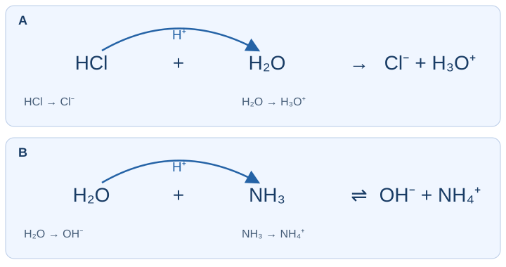

เติมบทความ: เกณฑ์อาร์เรเนียส
ทฤษฎีอาร์เรเนียสพิจารณาสารใน [ ] กรดทำให้ความเข้มข้น [ ] เพิ่มขึ้น ส่วนเบสทำให้ [ ] เพิ่มขึ้น
สารละลายน้ำ
\(\ce{OH-}\)
\(\ce{Na+}\)
\(\ce{H3O+}\)
ทุกตัวทำละลายโดยไม่มีเงื่อนไข
ดูสารตั้งต้นและไอออนที่เพิ่มขึ้นในน้ำ ตรวจทั้งอะตอมและผลรวมประจุ
ระบุทั้งตัวทำละลายและชนิดไอออน การเกิดไอออนบวกใด ๆ ไม่ใช่เกณฑ์อาร์เรเนียสของกรด
Specify the solvent and the relevant ions. Producing just any positive ion is not the Arrhenius criterion for an acid.
เติมบทความ: H⁺(aq) กับ H₃O⁺
H⁺ เป็นชื่อย่อที่ใช้เรียก [ ] ในน้ำไม่ได้หมายถึงโปรตอนอิสระที่อยู่เดี่ยว การเขียน H₃O⁺ ทำให้เห็นโมเลกุล [ ] ที่รับโปรตอน เมื่อเขียนสมการแบบเกิด H₃O⁺ ต้องตรวจ [ ] ให้ครบ
อะตอมและประจุ
โปรตอน
จำนวนโมเลกุลอย่างเดียว
น้ำ
นิวตรอน
ดูสารตั้งต้นและไอออนที่เพิ่มขึ้นในน้ำ ตรวจทั้งอะตอมและผลรวมประจุ
เขียน H⁺ + H₂O → H₃O⁺ เป็นแบบจำลองการรับโปรตอนของน้ำ ทั้งสองสัญลักษณ์ใช้ในบริบทน้ำโดยต้องดุลสมการให้ตรงรูปที่เลือก
H⁺ + H₂O → H₃O⁺ represents proton acceptance by water. Both aqueous notations are used, with the equation balanced for the notation chosen.
เติมบทความ: แยกไอออนเดิมกับเกิดไอออนจากปฏิกิริยา
เมื่อ NaCl ส่วนที่ละลายกระจายในน้ำ จะ [ ] ส่วน HCl ซึ่งเป็นสารโมเลกุลจะ [ ] กับน้ำ ความแตกต่างนี้เกี่ยวกับ [ ]
แยกไอออนที่มีอยู่เดิม
เกิดไอออนจากปฏิกิริยา
สร้างธาตุชนิดใหม่
เปลี่ยนโปรตอนเป็นอิเล็กตรอน
ลักษณะของสารตั้งต้น
ดูสารตั้งต้นและไอออนที่เพิ่มขึ้นในน้ำ ตรวจทั้งอะตอมและผลรวมประจุ
NaCl เป็นสารประกอบไอออนิกอยู่แล้ว ส่วนโมเลกุล HCl ถ่ายโอนโปรตอนให้น้ำจนเกิดไอออน
NaCl is already ionic. Molecular HCl transfers a proton to water to produce ions.
ตัวอย่างจากหนังสือ: อ่านสมการของกรดสองชนิด
\(\ce{HCl(aq) -> H+(aq) + Cl-(aq)}\)
\(\ce{CH3COOH(aq) <=> CH3COO-(aq) + H+(aq)}\)
สสวท. เคมี เล่ม 4 หน้า 5 · ตัวอย่างอาร์เรเนียส
เปิดใบเรียนรู้อ่านคู่ · หัวข้อ 7
ในสมการย่อ HCl และ CH₃COOH ต่างให้ [ ] ในน้ำ จึงจัดเป็น [ ] ตามอาร์เรเนียส สำหรับ CH₃COOH ลูกศร [ ] แสดงว่าปฏิกิริยาเกิดได้ทั้งไปและกลับ
เบส
\(\ce{H+}\)
กรด
สองทิศทาง
\(\ce{OH-}\)
ดูสารตั้งต้นและไอออนที่เพิ่มขึ้นในน้ำ ตรวจทั้งอะตอมและผลรวมประจุ
ทั้งสองเป็นกรดโดยดู H⁺(aq) ที่เพิ่มขึ้น ไม่ใช่ดูเพียงจำนวน H ในสูตร H⁺ ในน้ำเป็นรูปย่อของโปรตอนที่สัมพันธ์กับน้ำ กรดแอซีติกใช้ลูกศรสมดุล
Both are acids because aqueous H⁺ increases, not merely because their formulas contain H. In water, H⁺ is shorthand for the solvated proton; acetic acid is shown with an equilibrium arrow.
ตัวอย่างจากหนังสือ: อ่านสมการของเบสสองชนิด
\(\ce{NaOH(s) -> Na+(aq) + OH-(aq)}\)
\(\ce{Ca(OH)2(s) -> Ca^2+(aq) + 2OH-(aq)}\)
สสวท. เคมี เล่ม 4 หน้า 5 · ตัวอย่างอาร์เรเนียส
เปิดใบเรียนรู้อ่านคู่ · หัวข้อ 7
NaOH และ Ca(OH)₂ เป็นเบสเพราะส่วนที่ละลายทำให้ [ ] เพิ่มขึ้น ต่อหนึ่งหน่วยสูตร NaOH ให้ไอออนชนิดนี้ [ ] ไอออน ส่วน Ca(OH)₂ ให้ [ ] ไอออน ต้องอ่านเลขห้อยให้สัมพันธ์กับสัมประสิทธิ์
\(1\)
\(\ce{H3O+}\)
\(\ce{OH-}\)
\(2\)
\(3\)
ดูสารตั้งต้นและไอออนที่เพิ่มขึ้นในน้ำ ตรวจทั้งอะตอมและผลรวมประจุ
จำนวน OH ในหน่วยสูตรต่างกัน จึงให้ OH⁻ ต่างจำนวนกัน พิจารณาต่อส่วนที่ละลาย โดยไม่สรุปว่า Ca(OH)₂ ของแข็งทุกปริมาณละลายหมด
The formula units contain different numbers of OH groups and release different numbers of OH⁻ ions. This refers to the dissolved portion; it does not assert unlimited solubility of solid Ca(OH)₂.
เติมวิธีคิด: ดุลสมการโดยรักษาชนิดสาร
ในการดุลสมการ เราเปลี่ยน [ ] หน้าสูตร ไม่เปลี่ยน [ ] เพื่อให้กลายเป็นสารอื่น ตัวอย่าง 2Ca(OH)₂ แทน Ca [ ] อะตอม และกลุ่ม OH [ ] กลุ่ม
\(2\)
\(4\)
\(1\)
ชื่อธาตุ
สัมประสิทธิ์
เลขห้อย
ดูสารตั้งต้นและไอออนที่เพิ่มขึ้นในน้ำ ตรวจทั้งอะตอมและผลรวมประจุ
ตัวเลขหน้าสูตรคูณทุกส่วนของสูตร ส่วนเลขห้อยระบุองค์ประกอบของสาร การดุลต้องรักษาทั้งชนิดสาร อะตอม และประจุ
A leading coefficient multiplies the whole formula. Subscripts specify composition. Balancing preserves substance identities, atoms and charge.
เติมตารางจากหนังสือ: HClO₄ เป็นกรด
ข้อมูลจากตารางตรวจสอบความเข้าใจ สารหรือไอออนที่กำหนด ข้อมูลของแถวนี้ HClO₄(aq) กรด · เติมผลิตภัณฑ์ในสมการ
สสวท. เคมี เล่ม 4 หน้า 6 · ตรวจสอบความเข้าใจ แถว 1
เปิดใบเรียนรู้อ่านคู่ · หัวข้อ 7
ตารางกำหนดว่า HClO₄(aq) เป็นกรด เติมสมการย่อ HClO₄(aq) → [ ] + [ ] ผลรวมประจุของผลิตภัณฑ์เท่ากับ [ ] จึงตรงกับสารตั้งต้นที่เป็นกลาง
\(\ce{ClO3-(aq)}\)
\(\ce{OH-(aq)}\)
\(\ce{ClO4-(aq)}\)
\(\ce{H+(aq)}\)
\(0\)
ดูสารตั้งต้นและไอออนที่เพิ่มขึ้นในน้ำ ตรวจทั้งอะตอมและผลรวมประจุ
กรดเปอร์คลอริกให้ H⁺(aq) กับ ClO₄⁻(aq) อะตอมคงเดิมและ (+1)+(−1)=0
Perchloric acid gives aqueous H⁺ and ClO₄⁻. Atom counts are unchanged and (+1)+(−1)=0.
เติมตารางจากหนังสือ: LiOH เป็นเบส
ข้อมูลจากตารางตรวจสอบความเข้าใจ สารหรือไอออนที่กำหนด ข้อมูลของแถวนี้ LiOH(aq) เบส · เติมไอออนที่แยกออกมา
สสวท. เคมี เล่ม 4 หน้า 6 · ตรวจสอบความเข้าใจ แถว 2
เปิดใบเรียนรู้อ่านคู่ · หัวข้อ 7
LiOH(aq) แยกเป็น [ ] กับ [ ] ไอออนที่อธิบายสมบัติเบสคือไฮดรอกไซด์ การแยกไอออนเดิมออกจากสารประกอบเรียกว่า [ ]
\(\ce{H+(aq)}\)
\(\ce{Li^2+(aq)}\)
\(\ce{OH-(aq)}\)
\(\ce{Li+(aq)}\)
การแยกตัวเป็นไอออน
ดูสารตั้งต้นและไอออนที่เพิ่มขึ้นในน้ำ ตรวจทั้งอะตอมและผลรวมประจุ
LiOH ประกอบด้วย Li⁺ และ OH⁻ อยู่แล้ว จำนวนอะตอมและผลรวมประจุต้องตรงกันทั้งสองข้าง
LiOH already consists of Li⁺ and OH⁻ ions. Balance atom counts and total charge on both sides.
เติมตารางจากหนังสือ: หาสารตั้งต้นจากผลิตภัณฑ์
ข้อมูลจากตารางตรวจสอบความเข้าใจ สารหรือไอออนที่กำหนด ข้อมูลของแถวนี้ HSO₄⁻(aq) + H₃O⁺(aq) ผลิตภัณฑ์ที่กำหนด · หาสารตั้งต้น
สสวท. เคมี เล่ม 4 หน้า 6 · ตรวจสอบความเข้าใจ แถว 3
เปิดใบเรียนรู้อ่านคู่ · หัวข้อ 7
เมื่อผลิตภัณฑ์ที่กำหนดคือ HSO₄⁻(aq) และ H₃O⁺(aq) สารตั้งต้นในขั้นนี้คือ [ ] กับ [ ] สารตั้งต้นตัวแรกจึงเป็น [ ] ตามอาร์เรเนียส
\(\ce{H2SO4(aq)}\)
เบส
\(\ce{SO4^2-(aq)}\)
กรด
\(\ce{H2O(l)}\)
ดูสารตั้งต้นและไอออนที่เพิ่มขึ้นในน้ำ ตรวจทั้งอะตอมและผลรวมประจุ
H₂SO₄ ให้โปรตอนขั้นแรกแก่น้ำ เกิด HSO₄⁻ และ H₃O⁺ สมการนี้ไม่ได้เขียนการให้โปรตอนทุกขั้นรวมกัน
H₂SO₄ transfers its first proton to water, giving HSO₄⁻ and H₃O⁺. This equation does not combine every proton-transfer step.
เติมตารางจากหนังสือ: Sr²⁺ และ 2OH⁻ มาจากอะไร
ข้อมูลจากตารางตรวจสอบความเข้าใจ สารหรือไอออนที่กำหนด ข้อมูลของแถวนี้ Sr²⁺(aq) + 2OH⁻(aq) ผลิตภัณฑ์ที่กำหนด · หาสารและประเภท
สสวท. เคมี เล่ม 4 หน้า 6 · ตรวจสอบความเข้าใจ แถว 4
เปิดใบเรียนรู้อ่านคู่ · หัวข้อ 7
เพื่อให้ได้ Sr²⁺(aq) + 2OH⁻(aq) สารตั้งต้นคือ [ ] ซึ่งเป็น [ ] ต้องมี OH⁻ [ ] ไอออนต่อ Sr²⁺ หนึ่งไอออน
\(2\)
เบส
\(\ce{SrOH(aq)}\)
กรด
\(\ce{Sr(OH)2(aq)}\)
ดูสารตั้งต้นและไอออนที่เพิ่มขึ้นในน้ำ ตรวจทั้งอะตอมและผลรวมประจุ
สูตร Sr(OH)₂ รักษาทั้งจำนวน O/H และประจุ +2 กับ 2(−1) เลขห้อย 2 ใช้กับทั้งกลุ่ม OH
Sr(OH)₂ balances O/H atom counts and +2 with 2(−1). The subscript applies to the whole OH group.
เติมตารางจากหนังสือ: HNO₃ กับน้ำ
ข้อมูลจากตารางตรวจสอบความเข้าใจ สารหรือไอออนที่กำหนด ข้อมูลของแถวนี้ HNO₃(aq) + H₂O(l) สารตั้งต้นที่กำหนด · เติมผลิตภัณฑ์
สสวท. เคมี เล่ม 4 หน้า 6 · ตรวจสอบความเข้าใจ แถว 5
เปิดใบเรียนรู้อ่านคู่ · หัวข้อ 7
HNO₃(aq) + H₂O(l) ให้ผลิตภัณฑ์ [ ] และ [ ] ทำให้ความเข้มข้นของไฮโดรเนียม [ ]
\(\ce{OH-(aq)}\)
\(\ce{H3O+(aq)}\)
\(\ce{NO3-(aq)}\)
เพิ่มขึ้น
\(\ce{NO2-(aq)}\)
ดูสารตั้งต้นและไอออนที่เพิ่มขึ้นในน้ำ ตรวจทั้งอะตอมและผลรวมประจุ
ไนเตรต NO₃⁻ คงกลุ่ม N/O ของกรดไว้ ส่วนน้ำรับโปรตอนเกิด H₃O⁺ ไม่ใช่ OH⁻
Nitrate NO₃⁻ retains the acid’s N/O group, while water accepts a proton to form H₃O⁺, not OH⁻.
อ่านสมการแล้วเติมบทความ: กรดตามอาร์เรเนียส
พิจารณาสารตั้งต้นในสมการที่ให้ สาร [ ] ทำให้ความเข้มข้นของ [ ] ในน้ำเพิ่มขึ้น จึงจัดเป็น [ ] ตามทฤษฎีอาร์เรเนียส
\(\ce{OH-}\)
\(\ce{H3O+}\)
\(\ce{HF}\)
เบส
กรด
ดูสารตั้งต้นและไอออนที่เพิ่มขึ้นในน้ำ ตรวจทั้งอะตอมและผลรวมประจุ
HF ทำให้เกิดไฮโดรเนียมในน้ำ H⁺(aq) ที่เขียนในสมการบางข้อเป็นรูปย่อของโปรตอนในสภาพแวดล้อมของน้ำ พิจารณาสารตั้งต้น ไม่เลือกไอออนผลิตภัณฑ์แทนสารที่ถาม
HF increases hydronium in water. H⁺(aq) in a shorthand equation denotes the proton in its aqueous environment. Identify the reactant, rather than substituting a product ion for the requested species.
อ่านสมการแล้วเติมบทความ: กรดตามอาร์เรเนียส
พิจารณาสารตั้งต้นในสมการที่ให้ สาร [ ] ทำให้ความเข้มข้นของ [ ] ในน้ำเพิ่มขึ้น จึงจัดเป็น [ ] ตามทฤษฎีอาร์เรเนียส
\(\ce{HSO4-}\)
กรด
\(\ce{OH-}\)
\(\ce{H3O+}\)
เบส
ดูสารตั้งต้นและไอออนที่เพิ่มขึ้นในน้ำ ตรวจทั้งอะตอมและผลรวมประจุ
HSO4- ทำให้เกิดไฮโดรเนียมในน้ำ H⁺(aq) ที่เขียนในสมการบางข้อเป็นรูปย่อของโปรตอนในสภาพแวดล้อมของน้ำ พิจารณาสารตั้งต้น ไม่เลือกไอออนผลิตภัณฑ์แทนสารที่ถาม
HSO4- increases hydronium in water. H⁺(aq) in a shorthand equation denotes the proton in its aqueous environment. Identify the reactant, rather than substituting a product ion for the requested species.
เติมบทความ: กรดหลาย H กับสมการขั้นที่กำหนด
ในสมการขั้นนี้ H₃PO₄ ให้ H⁺ [ ] ตัวแก่น้ำ ผลิตภัณฑ์ที่ยังมี H อยู่ในกลุ่มฟอสเฟตคือ [ ] อีกผลิตภัณฑ์คือ [ ] จึงไม่ควรปล่อย H ทุกตัวพร้อมกันโดยไม่ดูสมการ
\(3\)
\(1\)
\(\ce{H3O+}\)
\(\ce{PO4^3-}\)
\(\ce{H2PO4-}\)
ดูสารตั้งต้นและไอออนที่เพิ่มขึ้นในน้ำ ตรวจทั้งอะตอมและผลรวมประจุ
สมการนี้แสดงเฉพาะขั้นแรก ต้องรักษา H และประจุให้ตรงกัน การมี H สามตัวในสูตรไม่ได้แปลว่าสมการทุกขั้นให้ H⁺ สามตัว
This equation shows only the first step. Balance H and charge; three H atoms in the formula do not mean three H⁺ are transferred in every step.
เติมบทความ: เหตุใด NH₃ เป็นเบสในน้ำ
แม้ NH₃ ไม่มี OH ในสูตร แต่ในปฏิกิริยากับน้ำจะ [ ] H⁺ กลายเป็น [ ] และทำให้เกิด [ ] จึงอธิบายสมบัติเบสได้จากปฏิกิริยา
\(\ce{NH4+}\)
\(\ce{H3O+}\)
ให้
\(\ce{OH-}\)
รับ
ดูสารตั้งต้นและไอออนที่เพิ่มขึ้นในน้ำ ตรวจทั้งอะตอมและผลรวมประจุ
สูตรอย่างเดียวไม่พอ ต้องดู NH₃ รับโปรตอนจากน้ำแล้วน้ำเหลือ OH⁻ นิยามอาร์เรเนียสแบบเพิ่ม OH⁻ ในน้ำจึงอธิบายผลนี้ได้
The formula alone is insufficient. NH₃ accepts a proton from water, leaving OH⁻. The aqueous OH⁻-increase version of the Arrhenius definition describes this result.
เติมบทความ: กรด–เบสเบรินสเตด–ลาวรี
กรดเบรินสเตด–ลาวรีเป็นผู้ [ ] โปรตอน ส่วนเบสเป็นผู้ [ ] โปรตอน การระบุบทบาทจึงติดตาม [ ] ไม่จำเป็นต้องมีน้ำเป็นตัวทำละลายทุกกรณี
\(\ce{H+}\)
ให้
รับ
ให้คู่อิเล็กตรอนเป็นนิยามของกรด
\(\ce{OH-}\)
ติดตาม H หนึ่งตัวพร้อมประจุรวม จากสารตั้งต้นไปผลิตภัณฑ์ในทิศที่กำหนด
ระบุให้ชัดว่ากำลังติดตามโปรตอน นิยามลิวอิสจะติดตามคู่อิเล็กตรอนและมีทิศการให้–รับต่างกัน
State explicitly that protons are being tracked. Lewis definitions instead track electron pairs, with different donation/acceptance roles.
เติมวิธีคิด: ติดตาม NH₃ ไป NH₄⁺
NH₃ เปลี่ยนเป็น NH₄⁺ โดยจำนวน H เพิ่ม [ ] ตัว และประจุรวมเปลี่ยนจาก 0 เป็น [ ] การเปลี่ยนแปลงนี้ตรงกับการ [ ] โปรตอน
\(1\)
\(-1\)
รับ
ให้
\(+1\)
ติดตาม H หนึ่งตัวพร้อมประจุรวม จากสารตั้งต้นไปผลิตภัณฑ์ในทิศที่กำหนด
H⁺ หนึ่งตัวเพิ่ม H หนึ่งอะตอมและเพิ่มประจุ +1 พร้อมกัน จึงควรตรวจทั้งสูตรและประจุ ไม่ดูเลขห้อยอย่างเดียว
One H⁺ adds one H atom and +1 charge together. Check both formula and charge, not just a subscript.
ตัวอย่างจากหนังสือ: HCl(g) กับ NH₃(g)
แม้ไม่มีน้ำเป็นตัวทำละลายในสมการนี้ [ ] ให้โปรตอน ส่วน [ ] รับโปรตอน เกิดเกลือ [ ] จึงอธิบายการให้–รับด้วยทฤษฎี [ ] ได้
เบรินสเตด–ลาวรี
\(\ce{NH3}\)
\(\ce{NH4Cl}\)
\(\ce{H2}\)
อาร์เรเนียสสำหรับสารละลายน้ำเท่านั้น
\(\ce{HCl}\)
ติดตาม H หนึ่งตัวพร้อมประจุรวม จากสารตั้งต้นไปผลิตภัณฑ์ในทิศที่กำหนด
HCl ให้ H⁺ แล้วเหลือ Cl⁻ ส่วน NH₃ รับ H⁺ เป็น NH₄⁺ เกลือ NH₄Cl ประกอบด้วยไอออนทั้งสอง จึงมีการถ่ายโอนโปรตอนแม้ไม่มีน้ำเป็นตัวทำละลาย
HCl donates H⁺, leaving Cl⁻, while NH₃ accepts H⁺ to form NH₄⁺. The salt contains these ions; proton transfer does not require water as the solvent.
เปรียบเทียบตัวอย่างจากหนังสือ: น้ำทำหน้าที่เหมือนกันหรือไม่
\(\ce{HCl(g) + H2O(l) -> H3O+(aq) + Cl-(aq)}\)
\(\ce{NH3(g) + H2O(l) <=> NH4+(aq) + OH-(aq)}\)

เปรียบเทียบการเปลี่ยนสารในปฏิกิริยา HCl กับน้ำ และ NH₃ กับน้ำ ภาพแสดงเส้นทางของ H⁺ ไม่ใช่เส้นทางคู่อิเล็กตรอน สสวท. เคมี เล่ม 4 หน้า 7 · ตัวอย่างและภาพการถ่ายโอนโปรตอน
เปิดใบเรียนรู้อ่านคู่ · หัวข้อ 8
ในสมการ HCl กับน้ำ น้ำ [ ] โปรตอน จึงเป็น [ ] แต่ในสมการ NH₃ กับน้ำ น้ำ [ ] โปรตอน จึงเป็น [ ] บทบาทของน้ำต้องดูปฏิกิริยาที่กำลังพิจารณา
เบส
ไม่มีบทบาทเสมอ
รับ
กรด
ให้
ทำหน้าที่ชนิดเดียวเสมอ
ติดตาม H หนึ่งตัวพร้อมประจุรวม จากสารตั้งต้นไปผลิตภัณฑ์ในทิศที่กำหนด
น้ำที่รับ H⁺ กลายเป็น H₃O⁺ ส่วนน้ำที่ให้ H⁺ เหลือ OH⁻ สารเดียวจึงมีบทบาทต่างกันตามคู่ปฏิกิริยา
Water accepting H⁺ becomes H₃O⁺; water donating H⁺ becomes OH⁻. The same substance can have different roles with different reaction partners.
เติมบทความ: สลับลำดับเขียนสารแล้วบทบาทเปลี่ยนหรือไม่
แม้เขียน H₂O ไว้ก่อน NH₃ ในสมการ NH₃ ยัง [ ] โปรตอนและกลายเป็น NH₄⁺ จึงเป็น [ ] ส่วนน้ำเป็น [ ] การเรียงชื่อก่อน–หลังไม่ได้กำหนดบทบาท
ให้
กรด
เป็นกรดเพราะเขียนเป็นตัวแรกเสมอ
รับ
เบส
ติดตาม H หนึ่งตัวพร้อมประจุรวม จากสารตั้งต้นไปผลิตภัณฑ์ในทิศที่กำหนด
บทบาทมาจากการถ่ายโอน H⁺ ไม่ใช่ตำแหน่งของสารในสมการ
Roles follow proton transfer, not a species’ written position.
โจทย์จากหนังสือ: สารละลายโซเดียมแอซีเตต
\(\ce{CH3COONa(s) -> CH3COO-(aq) + Na+(aq)}\)
\(\ce{CH3COO-(aq) + H2O(l) <=> CH3COOH(aq) + OH-(aq)}\)
สสวท. เคมี เล่ม 4 หน้า 7 · ตรวจสอบความเข้าใจ
เปิดใบเรียนรู้อ่านคู่ · หัวข้อ 8
หลัง CH₃COONa แยกตัว ไอออนที่รับโปรตอนจากน้ำคือ [ ] จึงทำหน้าที่เป็น [ ] น้ำที่เสียโปรตอนทำให้เกิด [ ] ส่วน Na⁺ [ ] ในสมการที่ให้
เบส
ไม่ได้รับหรือให้โปรตอน
\(\ce{OH-}\)
\(\ce{CH3COO-}\)
\(\ce{H3O+}\)
กรด
ติดตาม H หนึ่งตัวพร้อมประจุรวม จากสารตั้งต้นไปผลิตภัณฑ์ในทิศที่กำหนด
การแยกเกลือเป็นไอออนเป็นคนละขั้นกับไอออนทำปฏิกิริยากับน้ำ แอซีเตตรับ H⁺ เกิดกรดแอซีติกและ OH⁻ จึงอธิบายสารละลายเป็นเบสได้
Salt dissociation and an ion’s reaction with water are separate steps. Acetate accepts H⁺, forming acetic acid and OH⁻; this explains the basic solution.
พิจารณาทิศไปข้างหน้า แล้วเติมคำอธิบายเบส
เบรินสเตด–ลาวรีพิจารณาการย้ายโปรตอน สารตั้งต้นที่เป็นเบสคือ [ ] เพราะ [ ] H⁺ แล้วกลายเป็น [ ] ส่วนสารที่ให้โปรตอนในสมการนี้คือ [ ]
\(\ce{H2O}\)
\(\ce{HCN}\)
\(\ce{H2}\)
\(\ce{CN-}\)
ให้
รับ
ติดตาม H หนึ่งตัวพร้อมประจุรวม จากสารตั้งต้นไปผลิตภัณฑ์ในทิศที่กำหนด
ติดตาม CN- ไปเป็น HCN: ได้ H เพิ่มหนึ่งตัวและประจุเพิ่มหนึ่งหน่วย จึงเป็นผู้รับโปรตอน ส่วน H2O ให้โปรตอน บทบาทขึ้นกับปฏิกิริยาที่กำหนด
Track CN- to HCN: it gains one H and its charge increases by one unit, identifying proton acceptance. H2O is the donor. Assign roles from the specified reaction.
พิจารณาทิศไปข้างหน้า แล้วเติมคำอธิบายเบส
เบรินสเตด–ลาวรีพิจารณาการย้ายโปรตอน สารตั้งต้นที่เป็นเบสคือ [ ] เพราะ [ ] H⁺ แล้วกลายเป็น [ ] ส่วนสารที่ให้โปรตอนในสมการนี้คือ [ ]
ให้
\(\ce{H2}\)
\(\ce{H3O+}\)
รับ
\(\ce{H2O}\)
\(\ce{H2S}\)
ติดตาม H หนึ่งตัวพร้อมประจุรวม จากสารตั้งต้นไปผลิตภัณฑ์ในทิศที่กำหนด
ติดตาม H2O ไปเป็น H3O+: ได้ H เพิ่มหนึ่งตัวและประจุเพิ่มหนึ่งหน่วย จึงเป็นผู้รับโปรตอน ส่วน H2S ให้โปรตอน บทบาทขึ้นกับปฏิกิริยาที่กำหนด
Track H2O to H3O+: it gains one H and its charge increases by one unit, identifying proton acceptance. H2S is the donor. Assign roles from the specified reaction.
พิจารณาทิศไปข้างหน้า แล้วเติมคำอธิบายเบส
เบรินสเตด–ลาวรีพิจารณาการย้ายโปรตอน สารตั้งต้นที่เป็นเบสคือ [ ] เพราะ [ ] H⁺ แล้วกลายเป็น [ ] ส่วนสารที่ให้โปรตอนในสมการนี้คือ [ ]
รับ
\(\ce{H2}\)
\(\ce{CH3COO-}\)
\(\ce{CH3COOH}\)
\(\ce{H2O}\)
ให้
ติดตาม H หนึ่งตัวพร้อมประจุรวม จากสารตั้งต้นไปผลิตภัณฑ์ในทิศที่กำหนด
ติดตาม CH3COO- ไปเป็น CH3COOH: ได้ H เพิ่มหนึ่งตัวและประจุเพิ่มหนึ่งหน่วย จึงเป็นผู้รับโปรตอน ส่วน H2O ให้โปรตอน บทบาทขึ้นกับปฏิกิริยาที่กำหนด
Track CH3COO- to CH3COOH: it gains one H and its charge increases by one unit, identifying proton acceptance. H2O is the donor. Assign roles from the specified reaction.
พิจารณาทิศไปข้างหน้า แล้วเติมคำอธิบายเบส
เบรินสเตด–ลาวรีพิจารณาการย้ายโปรตอน สารตั้งต้นที่เป็นเบสคือ [ ] เพราะ [ ] H⁺ แล้วกลายเป็น [ ] ส่วนสารที่ให้โปรตอนในสมการนี้คือ [ ]
\(\ce{H2O}\)
\(\ce{H2}\)
ให้
รับ
\(\ce{CH3NH3+}\)
\(\ce{CH3NH2}\)
ติดตาม H หนึ่งตัวพร้อมประจุรวม จากสารตั้งต้นไปผลิตภัณฑ์ในทิศที่กำหนด
ติดตาม CH3NH2 ไปเป็น CH3NH3+: ได้ H เพิ่มหนึ่งตัวและประจุเพิ่มหนึ่งหน่วย จึงเป็นผู้รับโปรตอน ส่วน H2O ให้โปรตอน บทบาทขึ้นกับปฏิกิริยาที่กำหนด
Track CH3NH2 to CH3NH3+: it gains one H and its charge increases by one unit, identifying proton acceptance. H2O is the donor. Assign roles from the specified reaction.
เติมบทความ: มีประจุลบแล้วเป็นเบสเสมอหรือไม่
ในสมการแรก HSO₄⁻ [ ] H⁺ จึงเป็นกรด แต่ในสมการที่สอง CN⁻ [ ] H⁺ จึงเป็นเบส ทั้งคู่มีประจุลบ จึงต้องใช้ [ ] เพื่อบอกบทบาท
ตำแหน่งซ้ายสุดอย่างเดียว
เครื่องหมายประจุอย่างเดียว
การเปลี่ยนสารในปฏิกิริยา
รับ
ให้
ติดตาม H หนึ่งตัวพร้อมประจุรวม จากสารตั้งต้นไปผลิตภัณฑ์ในทิศที่กำหนด
HSO₄⁻ เสีย H⁺ เป็น SO₄²⁻ ส่วน CN⁻ รับ H⁺ เป็น HCN การมีประจุ −1 เหมือนกันไม่ทำให้มีบทบาทเหมือนกัน
HSO₄⁻ loses H⁺ to become SO₄²⁻, while CN⁻ gains H⁺ to become HCN. Equal −1 charges do not imply equal roles.
เติมบทความ: จาก NH₄⁺ กลับเป็น NH₃
ในปฏิกิริยาที่ให้ NH₄⁺ กลายเป็น [ ] เพราะ [ ] H⁺ ส่วนน้ำรับ H⁺ เป็น [ ] ดังนั้น NH₄⁺ ทำหน้าที่เป็น [ ]
กรด
\(\ce{NH3}\)
\(\ce{OH-}\)
\(\ce{H3O+}\)
ให้
เบส
ติดตาม H หนึ่งตัวพร้อมประจุรวม จากสารตั้งต้นไปผลิตภัณฑ์ในทิศที่กำหนด
NH₄⁺ กับ NH₃ ไม่ใช่สารเดียวกัน NH₄⁺ ให้โปรตอนในปฏิกิริยานี้ ขณะที่ NH₃ รับโปรตอนได้ในปฏิกิริยาอีกทิศหนึ่ง
NH₄⁺ and NH₃ are distinct species. NH₄⁺ donates a proton here, whereas NH₃ can accept a proton in the reverse situation.
เติมบทความ: เมื่อถามปฏิกิริยาอีกทิศหนึ่ง
ในทิศที่เขียนนี้ HCN ให้ H⁺ จึงเป็น [ ] และ OH⁻ รับ H⁺ จึงเป็น [ ] ผลจากการรับโปรตอนของ OH⁻ คือ [ ] ต้องอ่านสารตั้งต้นของทิศที่โจทย์ถาม
เบส
\(\ce{H3O+}\)
CN⁻ เป็นสารตั้งต้นในสมการนี้
\(\ce{H2O}\)
กรด
ติดตาม H หนึ่งตัวพร้อมประจุรวม จากสารตั้งต้นไปผลิตภัณฑ์ในทิศที่กำหนด
การระบุบทบาทต้องอิงทิศทางที่ให้ ไม่ยกคำตอบจากสมการย้อนกลับมาใช้โดยไม่ตรวจสารตั้งต้น
Roles refer to the stated direction; do not copy a reverse-reaction answer without checking the reactants.
เติมวิธีคิดด้วยสัญลักษณ์: HA ให้โปรตอนแก่ B
กำหนด HA และ B เป็นสารเป็นกลาง เมื่อ HA ให้ H⁺ จะเหลือ [ ] ส่วน B รับ H⁺ จะเป็น [ ] ผลรวมประจุผลิตภัณฑ์จึงเท่ากับ [ ]
\(\mathrm{A}^{+}\)
\(\mathrm{BH}^{+}\)
\(\mathrm{A}^{-}\)
\(\mathrm{BH}^{-}\)
\(0\)
ติดตาม H หนึ่งตัวพร้อมประจุรวม จากสารตั้งต้นไปผลิตภัณฑ์ในทิศที่กำหนด
เขียนได้ว่า HA + B ⇌ A⁻ + BH⁺ ฝั่งผู้ให้ H ลดหนึ่งและประจุลดหนึ่ง ส่วนผู้รับ H และประจุเพิ่มหนึ่ง ผลรวมยังเป็นศูนย์
Write HA + B ⇌ A⁻ + BH⁺. Donation removes one H and one positive charge; acceptance adds both. Net charge remains zero.
เติมบทความ: คาร์บอเนตกับน้ำ
CO₃²⁻ รับ H⁺ แล้วเป็น [ ] จึงเป็น [ ] ส่วนน้ำให้ H⁺ จึงเป็น [ ] และเหลือ OH⁻ ใช้การเปลี่ยน H กับประจุช่วยติดตาม
\(\ce{CO2}\)
\(\ce{H3O+}\)
กรด
เบส
\(\ce{HCO3-}\)
ติดตาม H หนึ่งตัวพร้อมประจุรวม จากสารตั้งต้นไปผลิตภัณฑ์ในทิศที่กำหนด
CO₃²⁻ เพิ่ม H หนึ่งและประจุเพิ่มจาก −2 เป็น −1 การเกิด CO₂ กับกรดเป็นคนละบริบทกับสมการรับโปรตอนจากน้ำนี้
CO₃²⁻ gains one H and its charge increases from −2 to −1. Its CO₂-producing reaction with acid is a different context from this reaction with water.
เติมบทความ: กรด–เบสลิวอิส
ลิวอิสติดตาม [ ] กรดเป็นผู้ [ ] สิ่งนี้ ส่วนเบสเป็นผู้ [ ] เพื่อสร้างพันธะใหม่
คู่อิเล็กตรอน
โปรตอนเท่านั้น
รับ
ให้
นิวตรอน
เริ่มจากแหล่งคู่อิเล็กตรอน แล้วตามไปยังอะตอมที่รับคู่เพื่อสร้างพันธะ
อย่าสลับกับเบรินสเตด–ลาวรี: กรดลิวอิสรับคู่ ไม่ได้ให้อิเล็กตรอนคู่เป็นนิยาม
Do not reverse the Lewis definition: the acid accepts the pair, rather than donating it.
เติมบทความ: คู่อิเล็กตรอนในพันธะใหม่
ขณะเกิดพันธะตามภาพ คู่อิเล็กตรอนที่ใช้สร้างพันธะมาจาก [ ] เดียว มีอิเล็กตรอน [ ] ตัว หลังเกิดพันธะเป็นคู่อิเล็กตรอนที่ใช้ [ ] ระหว่างอะตอมที่เกิดพันธะ
\(2\)
อะตอม
โปรตอนที่ย้ายตำแหน่ง
ร่วมกัน
\(1\)
เริ่มจากแหล่งคู่อิเล็กตรอน แล้วตามไปยังอะตอมที่รับคู่เพื่อสร้างพันธะ
ภาพแสดงแหล่งของคู่อิเล็กตรอนที่ใช้เกิดพันธะโคเวเลนต์โคออร์ดิเนต ไม่ใช่การให้อิเล็กตรอนเดี่ยวคนละตัวในขั้นการเกิดพันธะที่แสดง
The diagram identifies the source of the pair used to form a coordinate covalent bond, rather than one electron supplied by each atom in the illustrated formation step.
ลูกศรโค้งในภาพ NH₃ กับ BF₃ สื่อความหมายใดได้ตรงที่สุด?
โปรตอนย้ายจาก N ไป B
คู่อิเล็กตรอนบน N ใช้สร้างพันธะกับ B
นิวเคลียส N เคลื่อนที่กลายเป็น B
อิเล็กตรอนคู่เริ่มที่ B และไปยัง N
เริ่มจากแหล่งคู่อิเล็กตรอน แล้วตามไปยังอะตอมที่รับคู่เพื่อสร้างพันธะ
อ่านจุดเริ่มจากคู่อิเล็กตรอนและปลายที่อะตอมรับคู่ ลูกศรนี้ติดตามคู่อิเล็กตรอนที่ใช้เกิดพันธะ ไม่ได้แทนการย้ายโปรตอน
Read the start at the lone pair and the end at the accepting atom. This arrow tracks the pair used in bond formation, not proton transfer.
อ่านสมการหรือภาพ แล้วเติมคำอธิบายคู่อิเล็กตรอน
\(\ce{NH3(g) + BF3(g) -> H3N-BF3(s)}\)
แผนภาพการเกิดพันธะระหว่าง NH₃ และ BF₃ จุดและลูกศรแสดงคู่อิเล็กตรอนที่ใช้สร้างพันธะ สสวท. เคมี เล่ม 4 หน้า 8
เปิดใบเรียนรู้อ่านคู่ · หัวข้อ 9
สาร [ ] ให้คู่อิเล็กตรอนเพื่อสร้างพันธะ จึงเป็นเบสลิวอิส ส่วน [ ] รับคู่อิเล็กตรอนที่อะตอม [ ] จึงเป็นกรดลิวอิส พันธะใหม่ที่กำลังพิจารณาคือ [ ]
\(\ce{NH3}\)
B
H–H
\(\ce{BF3}\)
N
N–B
เริ่มจากแหล่งคู่อิเล็กตรอน แล้วตามไปยังอะตอมที่รับคู่เพื่อสร้างพันธะ
ติดตามแหล่งคู่อิเล็กตรอนไปยังอะตอมรับคู่ ไม่ใช้การมี H หรือเครื่องหมายประจุเป็นเกณฑ์เพียงอย่างเดียว สมการนี้พิจารณาการเกิดพันธะตามที่ให้
Follow the electron pair from its source to the accepting atom. Neither the presence of H nor an ionic charge alone defines the role. Consider the bond formation specified in the equation.
อ่านสมการหรือภาพ แล้วเติมคำอธิบายคู่อิเล็กตรอน
สาร [ ] ให้คู่อิเล็กตรอนเพื่อสร้างพันธะ จึงเป็นเบสลิวอิส ส่วน [ ] รับคู่อิเล็กตรอนที่อะตอม [ ] จึงเป็นกรดลิวอิส พันธะใหม่ที่กำลังพิจารณาคือ [ ]
\(\ce{PH3}\)
\(\ce{AlCl3}\)
P–Al
Al
P
H–H
เริ่มจากแหล่งคู่อิเล็กตรอน แล้วตามไปยังอะตอมที่รับคู่เพื่อสร้างพันธะ
ติดตามแหล่งคู่อิเล็กตรอนไปยังอะตอมรับคู่ ไม่ใช้การมี H หรือเครื่องหมายประจุเป็นเกณฑ์เพียงอย่างเดียว สมการนี้พิจารณาการเกิดพันธะตามที่ให้
Follow the electron pair from its source to the accepting atom. Neither the presence of H nor an ionic charge alone defines the role. Consider the bond formation specified in the equation.
อ่านสมการหรือภาพ แล้วเติมคำอธิบายคู่อิเล็กตรอน
สาร [ ] ให้คู่อิเล็กตรอนเพื่อสร้างพันธะ จึงเป็นเบสลิวอิส ส่วน [ ] รับคู่อิเล็กตรอนที่อะตอม [ ] จึงเป็นกรดลิวอิส พันธะใหม่ที่กำลังพิจารณาคือ [ ]
\(\ce{OH-}\)
\(\ce{CO2}\)
H–H
O–C
C
O
เริ่มจากแหล่งคู่อิเล็กตรอน แล้วตามไปยังอะตอมที่รับคู่เพื่อสร้างพันธะ
ติดตามแหล่งคู่อิเล็กตรอนไปยังอะตอมรับคู่ ไม่ใช้การมี H หรือเครื่องหมายประจุเป็นเกณฑ์เพียงอย่างเดียว สมการนี้พิจารณาการเกิดพันธะตามที่ให้
Follow the electron pair from its source to the accepting atom. Neither the presence of H nor an ionic charge alone defines the role. Consider the bond formation specified in the equation.
อ่านสมการหรือภาพ แล้วเติมคำอธิบายคู่อิเล็กตรอน
สาร [ ] ให้คู่อิเล็กตรอนเพื่อสร้างพันธะ จึงเป็นเบสลิวอิส ส่วน [ ] รับคู่อิเล็กตรอนที่อะตอม [ ] จึงเป็นกรดลิวอิส พันธะใหม่ที่กำลังพิจารณาคือ [ ]
N
Ag
N–Ag
\(\ce{Ag+}\)
H–H
\(\ce{NH3}\)
เริ่มจากแหล่งคู่อิเล็กตรอน แล้วตามไปยังอะตอมที่รับคู่เพื่อสร้างพันธะ
ติดตามแหล่งคู่อิเล็กตรอนไปยังอะตอมรับคู่ ไม่ใช้การมี H หรือเครื่องหมายประจุเป็นเกณฑ์เพียงอย่างเดียว สมการนี้พิจารณาการเกิดพันธะตามที่ให้
Follow the electron pair from its source to the accepting atom. Neither the presence of H nor an ionic charge alone defines the role. Consider the bond formation specified in the equation.
อ่านสมการหรือภาพ แล้วเติมคำอธิบายคู่อิเล็กตรอน
สาร [ ] ให้คู่อิเล็กตรอนเพื่อสร้างพันธะ จึงเป็นเบสลิวอิส ส่วน [ ] รับคู่อิเล็กตรอนที่อะตอม [ ] จึงเป็นกรดลิวอิส พันธะใหม่ที่กำลังพิจารณาคือ [ ]
\(\ce{(CH3)2NH}\)
H–H
N
Al
N–Al
\(\ce{AlCl3}\)
เริ่มจากแหล่งคู่อิเล็กตรอน แล้วตามไปยังอะตอมที่รับคู่เพื่อสร้างพันธะ
ติดตามแหล่งคู่อิเล็กตรอนไปยังอะตอมรับคู่ ไม่ใช้การมี H หรือเครื่องหมายประจุเป็นเกณฑ์เพียงอย่างเดียว สมการนี้พิจารณาการเกิดพันธะตามที่ให้
Follow the electron pair from its source to the accepting atom. Neither the presence of H nor an ionic charge alone defines the role. Consider the bond formation specified in the equation.
เติมบทความ: ปฏิกิริยาที่ไม่มี H ให้ย้าย
ในสมการนี้ [ ] ให้คู่อิเล็กตรอน ส่วน [ ] รับคู่ที่ B เกิด BCl₄⁻ จึงอธิบายด้วยทฤษฎี [ ] ได้ แม้ไม่มีโปรตอนให้ย้าย
\(\ce{Cl-}\)
เบรินสเตด–ลาวรีโดยมีการย้าย H⁺
\(\ce{BCl3}\)
\(\ce{H3O+}\)
ลิวอิส
เริ่มจากแหล่งคู่อิเล็กตรอน แล้วตามไปยังอะตอมที่รับคู่เพื่อสร้างพันธะ
ลิวอิสครอบคลุมการให้–รับคู่อิเล็กตรอนที่สร้างพันธะ โดยไม่ต้องมีการให้–รับ H⁺ ทุกกรณี
Lewis acid–base behaviour includes electron-pair donation and acceptance to form bonds without requiring H⁺ transfer.
เติมบทความ: ใช้ประจุแทนข้อมูลคู่อิเล็กตรอนได้หรือไม่
NH₃ และ BF₃ ต่างเป็นกลาง แต่ NH₃ เป็นแหล่ง [ ] ขณะที่ BF₃ เป็นผู้ [ ] คู่ ส่วน Ag⁺ ก็รับคู่จาก NH₃ ได้ จึงใช้เครื่องหมายประจุ [ ]
รับ
โปรตอน
คู่อิเล็กตรอน
เพียงอย่างเดียวไม่ได้
เป็นเกณฑ์เพียงพอทุกกรณี
เริ่มจากแหล่งคู่อิเล็กตรอน แล้วตามไปยังอะตอมที่รับคู่เพื่อสร้างพันธะ
ตัวรับคู่เป็นได้ทั้งโมเลกุลเป็นกลางและไอออนบวก ส่วนตัวให้คู่ก็ไม่จำเป็นต้องมีประจุลบ ต้องดูโครงสร้างและปฏิกิริยา
A pair acceptor can be a neutral molecule or a positive ion; a donor need not be negative. Use structure and reaction evidence.
ใช้โครงสร้างเติมบทความ: BH₃ กับ PH₃
BH₃ ในภาพมีอิเล็กตรอนรอบ B จากสามพันธะรวม [ ] ตัว และ B สามารถ [ ] คู่อิเล็กตรอนได้ ส่วน PH₃ มี [ ] บน P จึงมีคู่ที่ใช้สร้างพันธะให้กับตัวรับได้
คู่อิเล็กตรอนโดดเดี่ยว
\(8\)
ไม่มีคู่อิเล็กตรอนให้เลย
รับ
\(6\)
เริ่มจากแหล่งคู่อิเล็กตรอน แล้วตามไปยังอะตอมที่รับคู่เพื่อสร้างพันธะ
สามพันธะรอบ B แทนอิเล็กตรอนหกตัว ส่วน P ใน PH₃ มีคู่อิเล็กตรอนโดดเดี่ยว การมี H เหมือนกันจึงไม่ทำให้เป็นเบสลิวอิสเหมือนกัน
Three bonds around B account for six electrons. P in PH₃ has a lone pair. Containing H does not make the two species equivalent Lewis bases.
เติมบทความ: กรดในสามทฤษฎี
อาร์เรเนียสพิจารณาการเพิ่ม [ ] ในน้ำ เบรินสเตด–ลาวรีพิจารณาการ [ ] โปรตอน ส่วนกรดลิวอิสพิจารณาการ [ ] คู่อิเล็กตรอน จึงต้องบอกทฤษฎีที่กำลังใช้เสมอ
รับ
จำนวน H ในสูตรเพียงอย่างเดียว
ให้
\(\ce{OH-}\)
\(\ce{H3O+}\)
แต่ละทฤษฎีติดตามคนละเกณฑ์ ระบุสิ่งที่ให้หรือรับให้ชัด
กรดเบรินสเตด–ลาวรีให้ H⁺ แต่กรดลิวอิสรับคู่อิเล็กตรอน เพราะสิ่งที่ติดตามต่างกัน
A Brønsted–Lowry acid donates H⁺ while a Lewis acid accepts an electron pair because the tracked entity differs.
พิจารณา HCl(g) + NH₃(g) → NH₄Cl(s) ข้อใดอธิบายขอบเขตทฤษฎีได้เหมาะสม?
อาร์เรเนียสใช้กับทุกปฏิกิริยาโดยไม่ต้องมีน้ำ
ไม่มีน้ำจึงไม่อาจเป็นปฏิกิริยากรด–เบสตามทฤษฎีใด
เบรินสเตด–ลาวรีอธิบาย HCl ให้และ NH₃ รับโปรตอน แม้ไม่ใช่สารละลายน้ำ
สารที่เขียนก่อนเป็นเบสเสมอ
แต่ละทฤษฎีติดตามคนละเกณฑ์ ระบุสิ่งที่ให้หรือรับให้ชัด
นิยามอาร์เรเนียสในใบใช้กับสารละลายน้ำ ขณะที่การติดตามโปรตอนใช้กับปฏิกิริยานี้ได้ โดยต้องพิจารณาการเปลี่ยนแปลงของสาร
The sheet’s Arrhenius definition concerns aqueous solutions, while proton transfer describes this reaction. Follow the species changes.